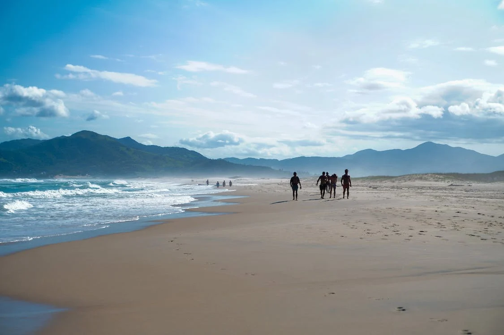

Most Visited Beach

Brava
Situated on the northern part of the island, Brava Beach offers breathtaking views, crystal-clear waters, and a vibrant atmosphere. This picturesque beach is known for its pristine beauty and untouched natural surroundings. With its golden sandy shores and tall cliffs, Brava Beach provides a unique setting for relaxation and exploration. The lush green hills and tropical vegetation create a tranquil ambiance, making it a popular destination for both locals and tourists. Brava Beach is also renowned for its excellent surfing conditions. The strong waves attract surfers from around the world, seeking thrilling experiences and challenging rides. Whether you're a seasoned surfer or a beginner looking to catch your first wave, Brava Beach offers an unforgettable surfing experience. Aside from its natural beauty and exciting water sports, Brava Beach is surrounded by trendy beach clubs, bars, and restaurants
Amazing Beaches
Mole

Praia Mole is known for its breathtaking natural beauty and vibrant surfing scene. With its crystal-clear waters and soft sands, it's a popular spot for both locals and tourists.
Joaquina
Praia Joaquina is famous for its massive sand dunes and excellent surfing conditions. The beach stretches for miles, offering plenty of space for sunbathing, beach sports, and relaxing walks.
Lagoinha do Leste

Praia da Lagoinha do Leste is a secluded and pristine beach accessible only by hiking or boat. Surrounded by lush green hills and a calm lagoon, it offers a tranquil escape from the bustling city life.